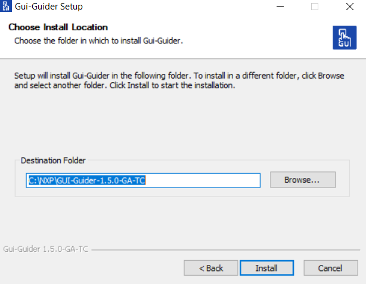

getting_started
installation
windows_10
Windows 10
To install GUI Guider on Windows 10, download the installer from
www.nxp.com/gui-guider
, and run the
setup.exe
file.
Figure:
Choose install location
